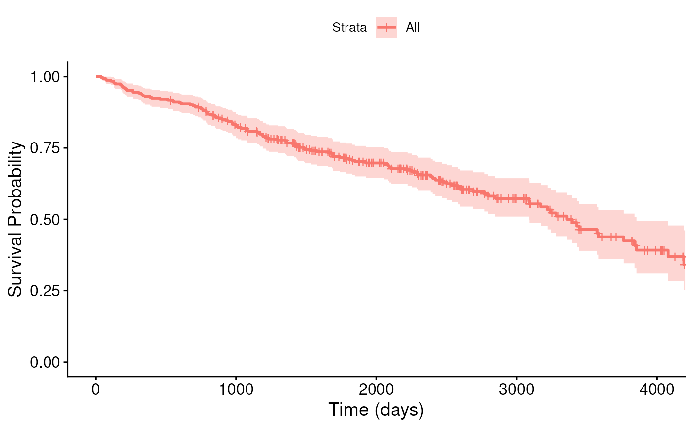
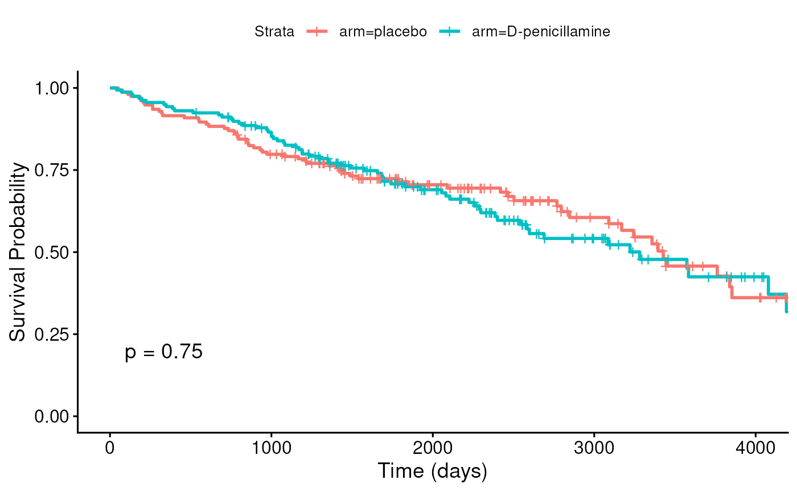
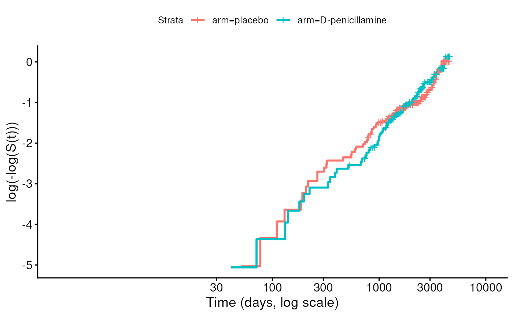

Session 8 lab exercise: Survival Analysis part 3
Levi Waldron
session_lab.RmdLearning objectives
- Make stratified and unstratified Kaplan-Meier plots
- Perform Cox proportional hazards regression
- Assess the proportional hazards assumption
- Use residuals to check the fit of a Cox model
- Fit multivariable Cox models, perform tests for trend, and predict survival for specific covariate patterns
Load the Primary Biliary Cirrhosis (pbc) dataset from the survival package
- Mayo Clinic trial in primary biliary cirrhosis (PBC) of the liver conducted between 1974 and 1984, patients.
- Randomized placebo controlled trial of the drug D-penicillamine.
- 312 cases from RCT, plus additional 106 not from RCT.
- Primary outcome is (censored) time to death
## id time status trt
## Min. : 1.0 Min. : 41 Min. :0.0000 Min. :1.000
## 1st Qu.:105.2 1st Qu.:1093 1st Qu.:0.0000 1st Qu.:1.000
## Median :209.5 Median :1730 Median :0.0000 Median :1.000
## Mean :209.5 Mean :1918 Mean :0.8301 Mean :1.494
## 3rd Qu.:313.8 3rd Qu.:2614 3rd Qu.:2.0000 3rd Qu.:2.000
## Max. :418.0 Max. :4795 Max. :2.0000 Max. :2.000
## NAs :106
## age sex ascites hepato spiders
## Min. :26.28 m: 44 Min. :0.00000 Min. :0.0000 Min. :0.0000
## 1st Qu.:42.83 f:374 1st Qu.:0.00000 1st Qu.:0.0000 1st Qu.:0.0000
## Median :51.00 Median :0.00000 Median :1.0000 Median :0.0000
## Mean :50.74 Mean :0.07692 Mean :0.5128 Mean :0.2885
## 3rd Qu.:58.24 3rd Qu.:0.00000 3rd Qu.:1.0000 3rd Qu.:1.0000
## Max. :78.44 Max. :1.00000 Max. :1.0000 Max. :1.0000
## NAs :106 NAs :106 NAs :106
## edema bili chol albumin
## Min. :0.0000 Min. : 0.300 Min. : 120.0 Min. :1.960
## 1st Qu.:0.0000 1st Qu.: 0.800 1st Qu.: 249.5 1st Qu.:3.243
## Median :0.0000 Median : 1.400 Median : 309.5 Median :3.530
## Mean :0.1005 Mean : 3.221 Mean : 369.5 Mean :3.497
## 3rd Qu.:0.0000 3rd Qu.: 3.400 3rd Qu.: 400.0 3rd Qu.:3.770
## Max. :1.0000 Max. :28.000 Max. :1775.0 Max. :4.640
## NAs :134
## copper alk.phos ast trig
## Min. : 4.00 Min. : 289.0 Min. : 26.35 Min. : 33.00
## 1st Qu.: 41.25 1st Qu.: 871.5 1st Qu.: 80.60 1st Qu.: 84.25
## Median : 73.00 Median : 1259.0 Median :114.70 Median :108.00
## Mean : 97.65 Mean : 1982.7 Mean :122.56 Mean :124.70
## 3rd Qu.:123.00 3rd Qu.: 1980.0 3rd Qu.:151.90 3rd Qu.:151.00
## Max. :588.00 Max. :13862.4 Max. :457.25 Max. :598.00
## NAs :108 NAs :106 NAs :106 NAs :136
## platelet protime stage
## Min. : 62.0 Min. : 9.00 Min. :1.000
## 1st Qu.:188.5 1st Qu.:10.00 1st Qu.:2.000
## Median :251.0 Median :10.60 Median :3.000
## Mean :257.0 Mean :10.73 Mean :3.024
## 3rd Qu.:318.0 3rd Qu.:11.10 3rd Qu.:4.000
## Max. :721.0 Max. :18.00 Max. :4.000
## NAs :11 NAs :2 NAs :6Create a Surv object using variables “time” and
“status”, add this to the pbc dataframe
status is coded 0 = censored (alive at end of study), 1
= liver transplant, and 2 = dead. Patients who received transplants are
removed from risk of death, at least due to liver cirrhosis.
Transplantation may thus be related to risk, and not qualify as
uninformative censoring. It could actually be considered a “competing
risk” because high-risk patients may be prioritized for liver transplant
(see the end of the lecture). Instead, we will simply treat 0 and 1 as
censored, and 2 (death) as an event.
We also keep only the 312 participants in the RCT, who have a
non-missing treatment assignment trt (1 = D-penicillamine,
2 = placebo), and recode it as a factor with placebo as the reference
group, as in the lecture. stage and edema are
converted to factors for later use.
pbc2 <- pbc %>%
filter(!is.na(trt)) %>%
mutate(death = status == 2) %>%
mutate(y = Surv(time, death)) %>%
mutate(arm = factor(trt, levels = 2:1, labels = c("placebo", "D-penicillamine")),
stage = factor(stage),
edema = factor(edema))
table(pbc2$arm, pbc2$death)##
## FALSE TRUE
## placebo 94 60
## D-penicillamine 93 65Plot a KM curve for all participants using
library(survminer) function ggsurvplot().
fit <- survfit(y ~ 1, data = pbc2)
ggsurvplot(fit, xlab = "Time (days)", ylab = "Survival Probability")
Stratify by treatment and add a p-value to this plot (see
?ggsurvplot).
fit2 <- survfit(y ~ arm, data = pbc2)
ggsurvplot(fit2, pval = TRUE, xlab = "Time (days)", ylab = "Survival Probability")
Check whether these p-values correspond to results from a log-rank test.
survdiff(y ~ arm, data = pbc2)## Call:
## survdiff(formula = y ~ arm, data = pbc2)
##
## N Observed Expected (O-E)^2/E (O-E)^2/V
## arm=placebo 154 60 61.8 0.0513 0.102
## arm=D-penicillamine 158 65 63.2 0.0502 0.102
##
## Chisq= 0.1 on 1 degrees of freedom, p= 0.7Perform a Cox proportional hazards regression, using the treatment arm as a predictor.
## Call:
## coxph(formula = y ~ arm, data = pbc2)
##
## n= 312, number of events= 125
##
## coef exp(coef) se(coef) z Pr(>|z|)
## armD-penicillamine 0.05722 1.05889 0.17916 0.319 0.749
##
## exp(coef) exp(-coef) lower .95 upper .95
## armD-penicillamine 1.059 0.9444 0.7453 1.504
##
## Concordance= 0.499 (se = 0.025 )
## Likelihood ratio test= 0.1 on 1 df, p=0.7
## Wald test = 0.1 on 1 df, p=0.7
## Score (logrank) test = 0.1 on 1 df, p=0.7Create a log-minus-log plot to assess the proportional hazards assumption.
fun = "cloglog" plots
against time on a log scale. Under proportional hazards, the curves for
the two arms should be roughly parallel.
ggsurvplot(fit2, fun = "cloglog", xlab = "Time (days, log scale)")
Plot Schoenfeld residuals and perform Schoenfeld test for the above Cox model
fitzph## chisq df p
## arm 0.612 1 0.43
## GLOBAL 0.612 1 0.43Exercises
Exercise 1: Martingale and deviance residuals
Fit the Cox model
coxph(y ~ age + edema + arm, data = pbc2). As in the
lecture, plot its Martingale residuals
(residuals(..., type = "martingale")) and deviance
residuals (residuals(..., type = "deviance")) against
follow-up time, with a horizontal line at zero and a smoother, for
example with ggplot(), geom_point(),
geom_hline(), and geom_smooth().
- What is the largest possible value of a Martingale residual, and why? Which of the two types of residual is more symmetrically distributed about zero?
- Find the 5 patients with the largest absolute deviance residuals,
and look at their
time,death,age,edema, andarm. Why does the model predict these patients poorly?
Exercise 2: Test for trend across stage
Fit a Cox model with histologic stage as an unordered
factor, then refit it with stage as an ordered factor
(factor(stage, ordered = TRUE)), as in the lecture. In the
ordered model, the .L, .Q, and .C
terms are the linear, quadratic, and cubic trends across the four
stages. Is there evidence for a linear trend in the log hazard across
stage? For a non-linear trend?
Exercise 3: Multivariable model and predicted survival
Fit a multivariable Cox model
coxph(y ~ age + edema + stage + arm, data = pbc2) and
report the adjusted hazard ratios with 95% confidence intervals. Check
the proportional hazards assumption for every term with
cox.zph(); does any term appear to violate it? Finally,
predict and plot survival curves for two patients who are both 50 years
old, with no edema, and in the placebo arm: one in stage 1 and one in
stage 4.
Hint: Create the covariate patterns with a
data.frame whose factor levels match the data, then pass it
to survfit():
newpatients <- data.frame(
age = c(50, 50),
edema = factor(c("0", "0"), levels = levels(pbc2$edema)),
stage = factor(c("1", "4"), levels = levels(pbc2$stage)),
arm = factor(c("placebo", "placebo"), levels = levels(pbc2$arm))
)
predfit <- survfit(fitmulti, newdata = newpatients)
ggsurvplot(predfit, data = newpatients, legend.labs = c("Stage 1", "Stage 4"))